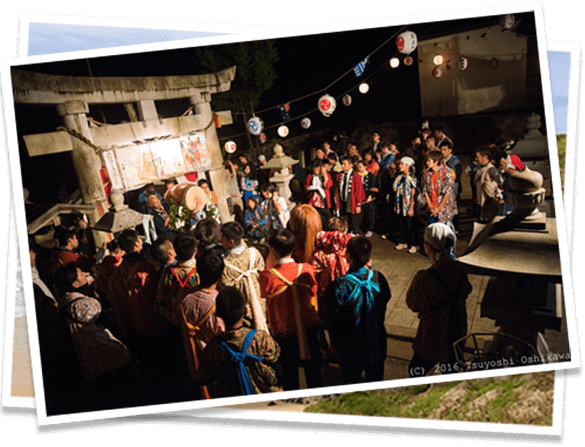
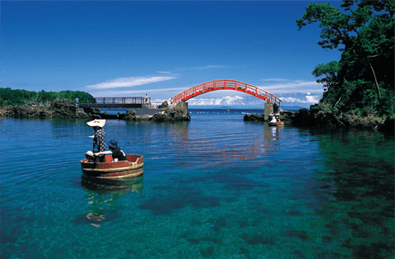
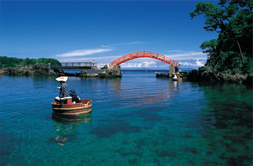

佐渡へこいっちゃ
佐渡島は日本海に浮かぶ新潟県の島であり、人口は約5万7000人、面積は東京23区よりも大きく、日本の島の中では沖縄本島に次いで2番目に大きい島です。江戸から明治にかけて金の採掘で栄えた佐渡金山は、現在では言わずと知れた佐渡の名所となっています。しかし金山のみならず、古来から育まれ受け継がれてきた豊かな文化が佐渡には存在し、人々の生活に根付いています。島の人から「おんでこ」と呼ばれる鬼太鼓は佐渡の春の風物詩。魔除けの鬼が太鼓を叩いて家々を回り、商売繁盛、五穀豊穣を祈願します。また、江戸時代に島民の間に広まった能の文化は現代まで受け継がれ、現存する能舞台では今でも盛んに能が行われています。

文化
奈良時代以降、流刑となった人々は佐渡へ送られ、佐渡の文化形成に大きな影響を与えました。特に日蓮聖人、世阿弥などによってもたらされた能や文弥人形、のろま人形などの伝統芸能は、現代にまで受け継がれています。それらの伝統芸能は島の人々により祭事などの場で上演されるなど、佐渡の人々に愛されています。江戸時代に入ると佐渡は徳川幕府の直轄地となり、金の採掘で栄えます。佐渡金山における金の採掘の歴史は16世紀末にまで遡り、平成元年に採掘量の減少により中止されるまでの約400年の間、採掘がおこなわれました。江戸時代には佐渡金山で採掘された金は徳川幕府へと上納され、佐渡金山は国内最大の金銀山として徳川幕府の財政基盤を支える重要な役割を果たしました。現在は世界遺産登録に向けた取り組みがおこなわれています。
佐渡金山
佐渡金山の採掘方法は「露天掘り」と呼ばれ、現在では山が頂上から二つに割れるように残っており、「道遊の割戸」と呼ばれています。江戸時代からの手掘りの坑道を見学することも可能で、坑道見学後には併設されている資料館で佐渡金山の歴史を学ぶこともできます。

能
世阿弥によって佐渡にもたらされた能は、その後佐渡奉行大久保長安によって島民の間に広まりました。現在佐渡には約30の能舞台が残っており、これは日本に現存する能舞台の3分の1を占めます。能の上演は夏に集中しておこなわれ、かがり火を焚いておこなう「薪能」も見所の一つとなっています。
宿根木
江戸時代に西回り航路の寄港地として栄えた小木の宿根木集落。かつては廻船業や造船業などで賑わいをみせ、佐渡島内の富の3分の1が集まるとも言われました。屋根板の上に石を置いた「石置き木羽葦屋根」が見られ、情緒のある美しい街並みが保存されています。
自然
佐渡島の北側には大佐渡山脈が連なり、島内最高峰1172mの金北山は佐渡の民話にも数多く登場します。北の大佐渡山脈と南の小佐渡山脈との間には国仲平野が広がり、佐渡の豊かな自然がもたらす豊富な水を利用し、コシヒカリの生産がおこなわれています。夏が過ぎると国仲平野は稲穂で黄金色に染まり、秋の到来を告げます。2008年にはトキの自然放鳥が開始され、現在では佐渡の空を舞うトキの姿を眺めることができます。また、佐渡は平成23年に世界農業遺産(GIAHS)に登録され、佐渡の豊かな生物多様性や、人と自然が共生する農業のあり方が注目されています。
クリックすると説明が現れます

 


大佐渡石名天然杉
大佐渡石名天然杉
大佐渡山脈の標高900m付近に生育する石名の天然杉。強い風によって異様な形に湾曲したその姿は圧巻です。約650mの遊歩道が整備されており、遊歩道の入り口までは車で行くことができます。
大佐渡山脈の標高900m付近に生育する石名の天然杉。強い風によって異様な形に湾曲したその姿は圧巻です。約650mの遊歩道が整備されており、遊歩道の入り口までは車で行くことができます。
紅葉山公園
紅葉山公園
小佐渡の男神山、女神山には「紅葉山公園」があり、10月下旬頃から紅葉を楽しむことができます。毎年10月の最終日曜日には紅葉山まつりが開催されています。
小佐渡の男神山、女神山には「紅葉山公園」があり、10月下旬頃から紅葉を楽しむことができます。毎年10月の最終日曜日には紅葉山まつりが開催されています。
矢島・経島
矢島・経島
矢島・経島の２つの小島を繋ぐのが朱色の太鼓橋。矢島体験交流館では、ワカメやアワビ漁に使用されるたらい舟を体験することができ、透き通った佐渡の海を楽しめる名所となっています。
矢島・経島の２つの小島を繋ぐのが朱色の太鼓橋。矢島体験交流館では、ワカメやアワビ漁に使用されるたらい舟を体験することができ、透き通った佐渡の海を楽しめる名所となっている。
大野亀のトビシマカンゾウ
大野亀のトビシマカンゾウ
佐渡の最北端付近に位置するのは巨大な一枚岩である大野亀。その大野亀の周囲一帯は日本一のトビシマカンゾウの群生地が広がり、6月上旬から中旬にかけて見頃を迎えます。
佐渡の最北端付近に位置するのは巨大な一枚岩である大野亀。その大野亀の周囲一帯は日本一のトビシマカンゾウの群生地が広がり、6月上旬から中旬にかけて見頃を迎えます。
トキ
トキ
今や佐渡のシンボルとなったトキ。2008年にトキの自然放鳥が開始され、現在ではおよそ200羽のトキが島内に生息しています。トキ保護センターが新穂長畝にあり、トキの姿を見学できます。
今や佐渡のシンボルとなったトキ。2008年にトキの自然放鳥が開始され、現在ではおよそ200羽のトキが島内に生息しています。トキ保護センターが新穂長畝にあり、トキの姿を見学できます。
岩首昇竜棚田
岩首昇竜棚田
岩首集落から標高350mほどの山間部に広がる棚田。農業機械が入り込めないため、作業は今も人手によっておこなわれています。佐渡の世界農業遺産登録の象徴とも言えます。
岩首集落から標高350mほどの山間部に広がる棚田。農業機械が入り込めないため、作業は今も人手によっておこなわれています。佐渡の世界農業遺産登録の象徴とも言えます。
食
佐渡沖では北からの寒流と南からの暖流が交差するため、実に多種多様な魚介類が水揚げされます。佐渡の海産物といえばスルメイカ、ズワイガニ、サザエ、ブリ、本マグロ、トビウオ、アワビなどが挙げられ、季節ごとに異なる種類の海産物を楽しむことができます。また、佐渡は本土よりも夏は涼しく冬は暖かい気候であり、寒帯地方と熱帯地方の両方の植生が見られることが特徴です。そうした環境下において、日本有数のブランド米として名高い佐渡産コシヒカリや、しいたけ、おけさ柿、ルレクチェ、ビオレ・ソリエス(黒いちじく)など実に幅広い農産物の生産が行われています。毎年3月に開催される「佐渡食の陣」では、島内各地から集まる佐渡のグルメを楽しむことができます。
マウスを乗せると説明が現れます
いごねり
佐渡産のエゴ草を煮詰めて濾した後に固め、麺状に切って食べる郷土料理。ネギや生姜などの薬味を乗せて、醤油やポン酢などで食べるのが美味。北前船によって九州地方から伝わったという説が有力。
おけさ柿
佐渡の民謡である「佐渡おけさ」から名付けられ、「八珍柿」とも呼ばれる。温暖な気候である小佐渡で生産されており、焼酎を使用した渋抜きを経て出荷され、とろけるような食感と種がないのが特徴。濃厚な甘さが人気を博す。
日本酒
佐渡の良質な米と、豊かな自然がもたらす水が生み出す極上の日本酒。現在佐渡には６つの蔵元があり、それぞれが特徴を生かした酒造りを行なっている。国際線の機内酒として提供されるなど、世界からも注目が集まる。
佐渡天然ブリカツ丼
降雪を知らせる寒波が到来する頃に北から南下してきたブリが網に入り、これを「ブリ起こし」と呼ぶ。ブリカツ丼はブリを地場産米粉で揚げ、あごだし醤油ダレにつけてご飯に乗せたもの。「ブリカツくん」がマスコットキャラクター。
ズワイガニ
10月〜3月に水揚げされ、佐渡沖ではベニズワイガニ、ズワイガニ、毛ガニが獲れる。佐渡では手頃な値段で手に入り、佐渡の海洋深層水で１週間ほど短期蓄積されたカニは身が締まり、人気が高い。冬の佐渡を訪れる際には欠かせない食材。
牡蠣
加茂湖と真野湾で養殖が行われ、冬が旬。栄養素が豊富で、「海のミルク」とも呼ばれる。焼き牡蠣や牡蠣フライにしても美味しいが、蒸して食べる「ガンガン焼き」も人気。加茂湖の湖畔には牡蠣小屋が並び、趣のある風景が見られる。
アクセス
新潟本土から佐渡島へは、佐渡汽船株式会社が運営するカーフェリーまたはジェットフォイルを利用し、３つの航路からアクセスが可能です。季節によって船のダイヤは変動致しますので、必ず佐渡汽船株式会社が運営するホームページから最新の情報をご確認ください。ホームページへは下のリンクからアクセスできます。また、冬場は海が荒れやすく、欠航になることがございますのでご留意ください。
時刻表(2017年2月)
| 期間 | 新潟港→両津港 | 両津港→新潟港 |
| 平成29年2月1日 〜2月28日 |
06:00→08:30 | 05:30→08:00 |
| 09:20→11:50 | 09:15→11:45 | |
| 12:35→15:05 | 12:40→15:10 | |
| 16:00→18:30 | 16:05→18:35 | |
| 19:30→22:00 | 19:30→22:00 |
| 期間 | 新潟港→両津港 | 両津港→新潟港 |
| 平成29年2月1日 〜2月28日 |
07:55→09:00 | 07:20→08:25 |
| 09:40→10:45 | 09:25→10:30 | |
| 11:30→12:35 | 11:15→12:20 | |
| 13:45→14:50 | 13:20→14:25 | |
| ※15:55→17:00 | ※16:00→17:05 | |
| ◎16:25→17:30 | ◎16:25→17:30 |
※印 2/1〜12 運航
◎印 2/13〜28 運航
| 平成29年2月1日〜2月28日 | |
| 寺泊港→赤泊港 | 赤泊港→寺泊港 |
| 運休 | 運休 |
| 平成29年2月1日〜2月28日 | |
| 直江津港→小木港 | 小木港→直江津港 |
| 運休 | 運休 |
お問い合わせ
佐渡観光についてお困りのことやご不明な点がございましたら、右のフォームからご質問ください。「こういう旅がしたい」「佐渡でこれできないかな？」などのリクエストにもお答えしております。お気軽にお問い合わせください。